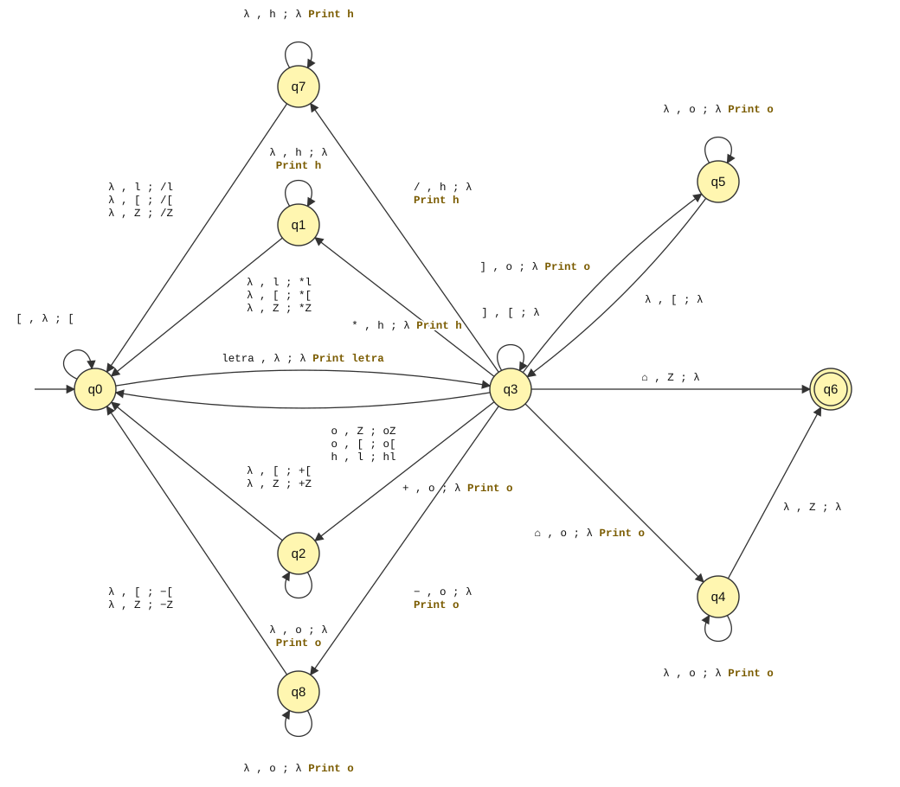

Intérprete de Expresiones Algebraicas
Transductor de Pila (PDT) y Analizador SLR(1) con capacidad de cómputo
| Integrantes | Legajo | Comisión |
|---|---|---|
| Brandan, Lucas | 60911 | 2K6 |
| Brandan, Mariano | 60910 | 2K6 |
| Guebel, Lautaro | 60462 | 2K7 |
| Martí, Mateo | 60244 | 2K6 |
| Pérez Arias, Tomás | 60798 | 2K7 |
| Docente: | Ing. Ricardo Silva Teseira |
| Año: | 2026 |
| Interfaz web: | https://gagaismo.github.io/LaboratorioSSL2/ |
Podemos decir que una MEF es un AFD al que se le agregó una función de salida. De igual modo se puede definir un Transductor de Pila (Push Down Transducer, PDT) como un APD al que se le agrega una función de salida, definida sobre un alfabeto de salida ΣS, con el mismo dominio que la función de transición del APD y rango en ΣS*:
g : (Q − F) × (ΣE ∪ {Δ, λ}) × ΣP* → ΣS*
3.1. Aplicar el concepto de PDT para diseñar un modelo capaz de hacer el análisis sintáctico o reconocimiento de una expresión aritmética de sumas, productos, divisiones y restas, con paréntesis, en notación infija y convertirla a notación posfija. Suponer como operandos identificadores de variables o constantes representados por una letra del alfabeto inglés.
3.2. Implementar un algoritmo que use un modelo similar al APD para evaluar una expresión posfija, dados los valores numéricos de sus identificadores de variable o constante. Cuando lea operandos los introduce en la pila; cuando lea un operador saca los operandos necesarios de la pila, hace la operación y coloca el resultado en la pila, hasta que al terminar de leer la expresión posfija tenga el resultado como único valor en la pila.
Un PDT es un APD al que se le agrega una cinta infinita de salida, donde puede escribir secuencias de un alfabeto de salida ΣS. Partiendo del estado inicial con la cinta de salida vacía, en cada paso: (1) LEE (READ) un símbolo de la cinta de entrada; (2) DESCARGA (POP) una secuencia de la pila; (3) de acuerdo al estado actual, al símbolo leído y a la secuencia sacada de la pila, CARGA (PUSH) una secuencia en la pila, ESCRIBE (PRINT) una secuencia en la cinta de salida y transiciona a un ESTADO NUEVO; (4) repite hasta llegar a un estado final de parada y aceptación o a un bloqueo con rechazo. Su definición formal es:
PDT = ⟨ Q, ΣE, ΣS, ΣP, q0, z0, F, f, g ⟩
con f : (Q − F) × (ΣE ∪ {Δ, λ}) × ΣP* → Q × ΣP* y g : (Q − F) × (ΣE ∪ {Δ, λ}) × ΣP* → ΣS*. Por ser determinista, no se permiten transiciones con READ y POP simultáneamente nulos, ni ninguna situación que produzca más de una reacción para un mismo estímulo.
Los analizadores LR(K) son autómatas de pila diseñados a partir de una GIC, con análisis ascendente por derivaciones más a la derecha, que recorren la entrada desde la izquierda y usan preanálisis de K símbolos. El caso más simple, con K = 1, es el SLR(1). Se construye un AF a partir de las reglas de la GIC; sus estados son los símbolos especiales que se cargan en la pila del AP junto con los símbolos gramaticales, y a partir de ese AF se obtiene la Tabla de Análisis LR (en este trabajo, con JFLAP). Las acciones de cómputo se realizan junto con las reducciones.
[ ]. La interfaz acepta también
paréntesis y los reemplaza por corchetes antes del análisis.⌂ (Δ en JFLAP) y el símbolo inicial de la pila es Z.letra.Idea del modelo: los operandos se escriben inmediatamente en la salida; el corchete de apertura se apila; un operador no puede
escribirse hasta que haya salido su segundo operando, por eso se apila, pero antes deben salir de la pila (y escribirse) los
operadores de igual o mayor precedencia que estén en el tope. El corchete de cierre vacía la pila hasta el corchete de apertura,
y el fin de cadena vacía la pila hasta Z.
Las pilas tienen siempre una forma muy acotada entre dos corchetes: a lo sumo un operador de baja precedencia y, encima, uno de alta. Al leer un operador hay que recordar cuál se leyó mientras se vacía la pila, para apilarlo al final. En el modelo de la cátedra eso lo hacen q1 (se leyó *) y q2 (se leyó +); con cuatro operadores se agregan q7 (se leyó /) y q8 (se leyó −).
PDT = ⟨ Q, ΣE, ΣS, ΣP, q0, z0, F, f, g ⟩
| Estado | Función | READ | POP |
|---|---|---|---|
| q0 | Inicial. Espera un operando o un corchete de apertura. | sí | no |
| q1 | Se leyó *: saca los operadores * y / del tope y luego apila *. | no | sí |
| q2 | Se leyó +: saca todos los operadores hasta [ o Z y luego apila +. | no | sí |
| q3 | Se leyó un operando. Espera un operador, un corchete de cierre o el fin de cadena. | sí | sí |
| q4 | Se leyó el fin de cadena: vacía la pila hasta Z. | no | sí |
| q5 | Se leyó un corchete de cierre: vacía la pila hasta [. | no | sí |
| q6 | Final de parada y aceptación. | — | — |
| q7 | Se leyó /: saca los operadores * y / del tope y luego apila /. | no | sí |
| q8 | Se leyó −: saca todos los operadores hasta [ o Z y luego apila −. | no | sí |
| q9 | Sumidero de rechazo (solo en la implementación). | — | — |
Para que el grafo sea legible, las transiciones análogas se agrupan con las siguientes variables:
o ∈ {+, −, *, /} (cualquier operador), h ∈ {*, /} (alta precedencia),
l ∈ {+, −} (baja precedencia) y letra ∈ {a, …, z}. Cada arista tiene la forma
READ , POP ; PUSH y la salida se indica con Print, como en JFLAP.

Cada fila es una transición válida. Los casilleros λ representan la No-operación. Toda combinación de estímulo (estado actual, READ, POP) que no figura en la tabla lleva al sumidero q9 (rechazo).
Se implementaron las dos estrategias propuestas por la cátedra. Ambas usan el mismo algoritmo de análisis y conversión; solo cambia cómo se obtiene la reacción del PDT a partir del estímulo (estado actual, READ, POP). Según el estado se decide si se lee la entrada y si se desapila: en q0 se lee y no se desapila; en q1, q2, q4, q5, q7 y q8 no se lee (λ) y se desapila; en q3 se lee y se desapila.
Primera estrategia: tabla como arreglo bidimensional. La tabla de la sección 3.4 se guarda como una matriz donde cada fila es una transición. El algoritmo busca secuencialmente la fila que corresponde al estímulo; si la búsqueda fracasa, se rechaza la secuencia.
Estado=q0
mientras (estado != q6 and estado != q9)
caso estado
q0: leer(símb_entrada)
símb_pila=vacío
q1, q2, q4, q5, q7, q8: símb_entrada=vacío
pop(símb_pila)
q3: leer(símb_entrada)
pop(simb_pila)
fin caso
pos=buscarEnTabla(estado, símb_entrada, simb_pila)
si (pos != q9)
push(tabla(pos,sec_push))
print(tabla(pos,print))
estado=tabla(pos,nuevo_estado)
sino
estado=q9
fin si
fin mientras
si (estado == q6)
entonces rutina_aceptación()
sino rutina_rechazo()
fin si
Segunda estrategia: tabla como arreglo tridimensional. Los símbolos de entrada y de pila y los estados se convierten
en índices numéricos, para acceder directamente a cada elemento de la tabla mediante el estímulo
tabla[estado][read][pop]. Cada elemento es un registro con tres campos: ESTADO NUEVO (entero), PUSH (cadena) y
PRINT (cadena). Los casilleros no definidos contienen el estado 9 (sumidero). La letra de entrada y el símbolo Z de la pila
comparten el índice 1, porque nunca aparecen en el mismo eje.
| Símbolo | Índice |
|---|---|
| λ | 0 |
| letra a..z , Z | 1 |
| + | 2 |
| − | 3 |
| * | 4 |
| / | 5 |
| [ | 6 |
| ] | 7 |
| ⌂ | 8 |
| Estado | Índice |
|---|---|
| q0 … q8 | 0 … 8 |
| q9 (sumidero) | 9 |
Estado=0
mientras (estado != 6 and estado != 9)
caso estado
0: leer(símb_entrada)
símb_pila=vacío
1, 2, 4, 5, 7, 8: símb_entrada=vacío
pop(símb_pila)
3: leer(símb_entrada)
pop(simb_pila)
fin caso
push(tabla(estado,símb_entrada,simb_pila).sec_push)
print(tabla(estado,símb_entrada,simb_pila).sec_print)
estado=tabla(estado,símb_entrada,simb_pila).nuevo_estado
fin mientras
si (estado == 6)
entonces rutina_aceptación()
sino rutina_rechazo()
fin si
La tabla tridimensional se carga a partir de las mismas filas de la sección 3.4, expresadas con índices:
La implementación (función convertirInfijaAPosfija del Anexo A) se verificó con 3000 expresiones generadas
al azar: ambas estrategias producen exactamente las mismas trazas y la misma expresión posfija que el algoritmo clásico de
conversión, y rechazan las cadenas mal formadas (operadores consecutivos, corchetes desbalanceados, operandos contiguos,
símbolos fuera del alfabeto, cadena vacía).
Ejemplo de aceptación. Entrada [a+b]*c-d/e⌂. La pila se muestra con el tope a la izquierda,
igual que las secuencias de PUSH.
La cadena es aceptada en q6 y la cinta de salida contiene la expresión posfija .
Ejemplo de rechazo. Entrada a+*b⌂: después de leer + el PDT queda en q0 esperando un operando, y no
hay transición definida para (q0, *, λ), por lo que pasa al sumidero q9.
El evaluador se basa en un Analizador SLR(1) construido con JFLAP a partir de la GIC de las expresiones posfijas. Se
extiende la gramática de la cátedra (S → SS+ | SS* | a) a los cuatro operadores; el terminal a representa
cualquier operando:
| Regla | Producción |
|---|---|
| r1 | S → SS+ |
| r2 | S → SS− |
| r3 | S → SS* |
| r4 | S → SS/ |
| r5 | S → a |
Paso 1) Gramática ampliada: se agrega la regla S' → S. ΣT = { a, +, −, *, / } ΣN = { S', S }.
Paso 2)
| PRIMERO | SIGUIENTE | |
|---|---|---|
| S | { a } | { *, +, −, /, a, $ } |
SIGUIENTE(S) contiene $ por S' → S; contiene los cuatro operadores porque S aparece antes del operador en
S → SSop; y contiene a porque el primer S de SSop está seguido por otro S, cuyo PRIMERO es { a }.
Paso 3) Estados del AF (símbolos especiales) con sus elementos y transiciones:
| Estado | Elementos | Transiciones |
|---|---|---|
| 0 | S' → ·S S → ·SS+ | ·SS− | ·SS* | ·SS/ S → ·a | S → 1 a → 2 |
| 1 | S' → S· S → S·S+ | S·S− | S·S* | S·S/ S → ·SS+ | ·SS− | ·SS* | ·SS/ S → ·a | S → 3 a → 2 |
| 2 | S → a· | — |
| 3 | S → SS·+ | SS·− | SS·* | SS·/ S → S·S+ | S·S− | S·S* | S·S/ S → ·SS+ | ·SS− | ·SS* | ·SS/ S → ·a | * → 4 + → 5 − → 6 / → 7 S → 3 a → 2 |
| 4 | S → SS*· | — |
| 5 | S → SS+· | — |
| 6 | S → SS−· | — |
| 7 | S → SS/· | — |
Paso 4) La tabla se representa con un arreglo bidimensional: el primer índice es el símbolo especial (estado del AF) y el
segundo los símbolos terminales, el no terminal S y el símbolo $ de fin de cadena. sk indica desplazar
e ir al estado k; rj, reducir por la regla j; acc, aceptar; el casillero vacío, error.
La tabla no tiene conflictos, por lo que la gramática es SLR(1).
Se utilizan dos pilas:
Y dos arreglos unidimensionales, construidos a partir de la expresión posfija:
a, se eliminan los
espacios en blanco y se agrega $ al final. Es la entrada del AP.a por su valor
al momento del cálculo.Los operandos pueden darse como identificadores (letras, cuyo valor se ingresa por separado, como pide el enunciado) o
directamente como números separados por espacios, como en las pautas de la cátedra (por ejemplo 10 4 + 2 3 * +).
CargarTabla()
Simb_especial = 0
insertar(Simb_especial)
leer(simbolo)
valor_tabla = tabla[Simb_especial, simbolo]
mientras (valor_tabla != aceptar)
caso (valor_tabla sea)
desplazamiento:
insertar(simbolo)
Simb_especial = valor_tabla.estado
insertar(Simb_especial)
leer(simbolo)
reducción:
extraer(lado_derecho_de_valor_tabla.ReglaReescritura)
Simb_especial = elemento_cima_de_la_pila_sin_extraer
insertar(lado_izquierdo_de_valor_tabla.ReglaReescritura)
Simb_especial = tabla[Simb_especial, lado_izquierdo_de_valor_tabla.ReglaReescritura]
insertar(Simb_especial)
operar_en_pila_de_calculo(lado_derecho_de_valor_tabla.ReglaReescritura)
vacío:
salir a la rutina_de_error()
fin_caso
valor_tabla = tabla[Simb_especial, simbolo]
fin_mientras
si (simbolo no es $)
salir a la rutina_de_error()
fin_si
vaciar_pila()
mostrar_resultado()
Al reducir se extraen de la pila de análisis 2·|lado derecho| elementos (cada símbolo gramatical con su símbolo especial).
La acción operar_en_pila_de_calculo es la que realiza el cómputo, junto con la reducción:
Al aceptar, el único valor que queda en la pila de cálculo es el resultado de la expresión.
Se evalúa la expresión posfija obtenida en el problema 3.1, ab+c*de/-, con los valores
a = 2, b = 3, c = 4, d = 10, e = 5. Arreglo simbólico: a a + a * a a / − $; arreglo numérico: 2 3 4 10 5.
Equivale a [2+3]*4 − 10/5 = 18. Cada fila muestra la configuración (pilas y entrada restante) antes de aplicar la acción indicada.
Resultado: .
Los dos problemas pueden evaluarse en dos interfaces publicadas con GitHub Pages, que ejecutan en el navegador la misma implementación del Anexo A:
Interfaz gráfica (https://gagaismo.github.io/LaboratorioSSL2/). Muestra la definición formal del PDT y la gramática con notación matemática (KaTeX), y:
Interfaz de consola (https://gagaismo.github.io/LaboratorioSSL2/consola.html). Una terminal con estilo TUI que acepta comandos: infija <expr> (problema 3.1), posfija [<expr>] [x=v …] (problema 3.2; sin expresión evalúa la última obtenida en 3.1), valores, estrategia 1|2, traza on|off, tabla pdt|lr, ejemplo y ayuda. Las trazas y las tablas se dibujan con caracteres de recuadro, y tiene historial de comandos y atajos de teclado (F1 a F4).
En la carpeta modelos/ de la página se incluyen los archivos de JFLAP: PDT-Analizador-Conversor-ExpAlg-4op.jff (el PDT modelado como autómata de pila con notas Print, con los operandos a, b y c como en el modelo de la cátedra) y GICinterpretePosfijo-4op.jff (la GIC, a partir de la cual JFLAP genera la tabla SLR(1) de la sección 4.4).
Con un PDT determinista de nueve estados se resuelve el reconocimiento de expresiones infijas con los cuatro operadores y corchetes, junto con su traducción a notación posfija, respetando la precedencia y la asociatividad a izquierda. La extensión del modelo de la cátedra solo requirió agregar un estado de vaciado por cada nuevo operador, porque el PDT debe recordar qué operador leyó mientras saca de la pila los de igual o mayor precedencia. Las dos estrategias de implementación dan los mismos resultados; la tridimensional accede directamente a la reacción, sin búsqueda secuencial.
El evaluador del problema 3.2 muestra un analizador SLR(1) con capacidad de cómputo: la pila de análisis valida la sintaxis de la expresión posfija y las acciones semánticas asociadas a las reducciones operan sobre una segunda pila, de modo que al aceptar la cadena el resultado queda como único valor en la pila de cálculo.
Archivo tp3.js (JavaScript). Contiene ambas estrategias del problema 3.1 y el evaluador del problema 3.2.
Cargando…